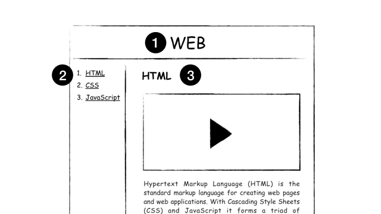

- 수업의 목적
- HTML과 JavaScript의 만남 1 : Script 태그
- HTML과 JavaScript의 만남 2 : 이벤트
- HTML과 JavaScript의 만남 3 : 콘솔
- 데이터타입-문자열과 숫자
- 변수와 대입연산자
- 웹브라우저 제어
- >CSS 기초
- 제어할 테그 선택하기
- 프로그램, 프로그래밍, 프로그래머
- 조건문 예고
- 비교연산자와 Boolean 데이터 타입
- 조건문
- 조건문의 활용
- 리팩토링 (refactoring)
- 반복문 예고
- 배열
- 반복문
- 배열과 반복문
- 배열과 반복문의 활용
- 함수예고
- 함수
- 함수의 활용<
- 객체예고
- 객체
- 객체의 활용
- 파일로 쪼개서 정리정돈하기
- 라이브러리와 프래임워크
- Ul vs API
- 수업을 마치며
3.기획

4.코딩과 HTML
부호 또는 신호라는 의미의 코드 (code)
원천이라는 뜻의 소스 (Source)
웹에서는 결과를 웹 페이지
웹페이지가 모여있으면 웹사이트
퍼블릭 도메인(Public Domain)
5.HTML 코딩 실습 환경 준비
에디터는 github.com에서 만든 Atom(아톰)입니다.
https://atom.io/
웹브라우저에서 볼 수 있는 웹페이지는 확장자가 html
웹페이지가 모여있으면 웹사이트